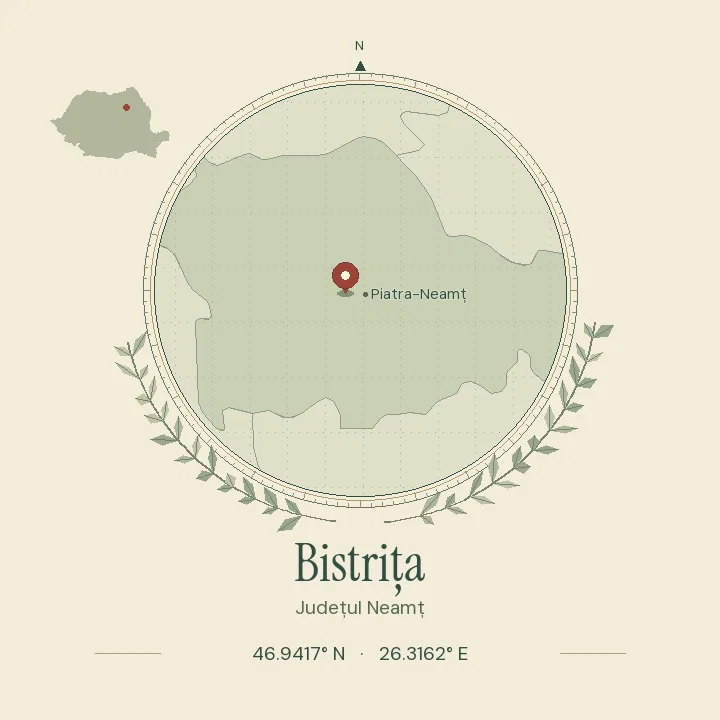
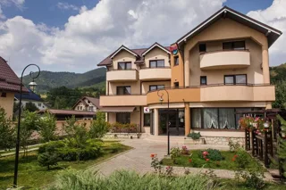
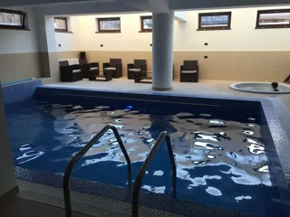

Locații de nuntă în Bistrița
- locații în director
- 6
- cu cazare în registrul SITUR
- 1
- medie ponderată Google
- 4,5 / 5
- evaluări Google
- 1.724
Cum alegi o locație în Bistrița
În Bistrița poți începe comparația cu "La căsuțe Luxury" Alexandru cel Bun, PIATRA-NEAMT (căsuță), Agropensiunea Ozon (cazare), Pensiunea Roua (bed & breakfast). Aceste proprietăți apar în primele poziții când luăm în calcul împreună nota și numărul de evaluări Google. Salvează adresele care vă interesează pentru a le așeza apoi alături în fișa de comparare a ofertelor.
În fișele proprietăților poți compara dotări concrete la "La căsuțe Luxury" Alexandru cel Bun, PIATRA-NEAMT (cazare, parcare gratuită, wi-fi gratuit), Agropensiunea Ozon (cazare). Pentru oferta de nuntă, întreabă ce spații și servicii dintre cele prezentate intră în rezervarea privată pentru data voastră.
Dacă vin rude de departe, Pensiunea Royal Spa Piatra Neamț are o unitate de cazare asociată în registrul SITUR. Înregistrarea pentru Royal Spa cuprinde 16 locuri de dormit în 8 spații de cazare. Întreabă câte camere pot fi păstrate pentru aceeași noapte înainte să trimiți invitaților detaliile de rezervare.
Dacă vrei să vezi două proprietăți în aceeași zi, poți continua de la Pensiunea Moldova spre La Curtea Domnească din Piatra Neamț. Punctele lor sunt la 3,7 km în linie dreaptă. Deschide traseul înainte să fixezi ora celei de-a doua vizite, mai ales dacă grupul se deplasează cu autocarul.
Locații pentru vizionare
Ordinea ține cont de nota Google și de numărul evaluărilor. Cum calculăm ordinea

Fotografie a locației · Sursa fotografiei Bistrița · Căsuță
"La căsuțe Luxury" Alexandru cel Bun, PIATRA-NEAMT
Căsuțe cu ciubăr și jacuzzi pe strada Pensiunilor din Bistrița (Neamț), notă 4,9. Sală de evenimente pomenită, dar fără nunți documentate.
Str. Pensiunilor, 617508 Bistrița+40 755 046 481
Hartă ilustrată Bistrița · Cazare
Agropensiunea Ozon
Agropensiunea Ozon. O familie cazată la Ozon descrie acces cu mașina și parcare gratuită în incintă, o cameră spațioasă și un mic dejun consistent.
Strada Petru Movilă 223, Bistrița+40 761 115 280
Fotografie a locației · Sursa fotografiei Bistrița · Bed & Breakfast
Pensiunea Roua
Pensiunea Roua. Un client care a revenit la Roua din Bistrița descrie o cameră mare cu baie renovată și menționează locurile de parcare.
Strada Petru Movilă 225, 617508 Bistrița+40 753 053 260
Hartă ilustrată Bistrița · Pensiune
Pensiunea Moldova
Apartamentul descris de un oaspete la Pensiunea Moldova avea două încăperi separate prin uși, un hol cu frigider și un balcon de unde se vedea lacul.
Str. Moldovei nr 2, 617508 Bistrița+40 751 048 199
Fotografie a locației · Sursa fotografiei Bistrița · Hotel
Pensiunea Royal Spa Piatra Neamț
Pensiunea Royal Spa Piatra Neamț. Pentru o întâlnire cu mai multe familii la Royal Spa, priviți împreună grădina, terasa și locul de joacă.
Str. Pensiunilor, 505617 Bistrița+40 744 664 889
Fotografie a locației · Sursa fotografiei Bistrița · Hotel
Hotel Restaurant Belvedere
Hotel Restaurant Belvedere, Bistrița. Camera cu vedere la lac a fost partea plăcută a sejurului unui vizitator la Belvedere.
Strada Petru Movilă 168, 617513 Bistrița+40 233 261 470
Întrebări despre locațiile din Bistrița
Unde pot dormi invitații în Bistrița?
În registrul de cazare SITUR găsim Pensiunea Royal Spa Piatra Neamț (16 locuri de cazare). Verifică ce camere sunt libere pentru noaptea evenimentului.
Ce proprietăți din Bistrița au grădină sau terasă?
Pensiunea Roua (grădină); Pensiunea Royal Spa Piatra Neamț (grădină, terasă); Hotel Restaurant Belvedere (terasă). Cere administratorului condițiile de folosire pentru o petrecere privată.
Care locație din Bistrița are cele mai multe evaluări Google?
Pensiunea Moldova are 560 de evaluări în profilul Google folosit la documentare. Evaluările acoperă și alte experiențe la proprietate, inclusiv vizitele fără eveniment.
Ce alte localități pot include într-o vizionare lângă Bistrița?
Cele mai apropiate adrese comparate pe hartă sunt în Piatra Neamț, Pângărăcior, Vădurele. Găsești mai jos distanțele dintre proprietățile folosite pentru această comparație.
Vizionări în apropiere
- Piatra Neamț · 4 locații. Între Pensiunea Moldova și La Curtea Domnească sunt 3,7 km în linie dreaptă.
- Pângărăcior · 1 locație. Între "La căsuțe Luxury" Alexandru cel Bun, PIATRA-NEAMT și Castelul de Smarald sunt 7,0 km în linie dreaptă.
- Vădurele · 1 locație. Între Pensiunea Roua și Pensiunea Vladurel sunt 7,3 km în linie dreaptă.